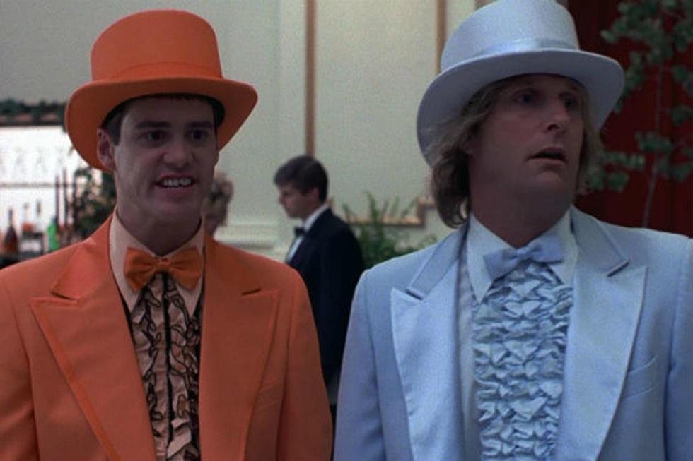
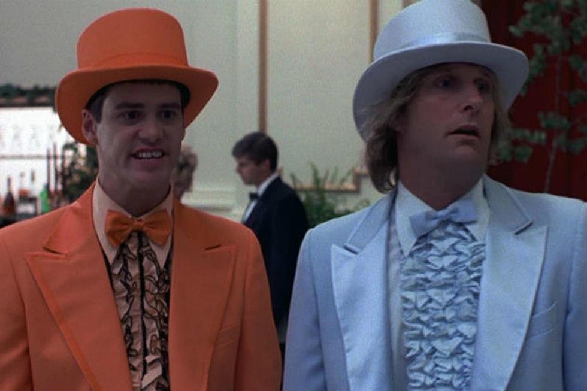

Review of The Movie!
Sara Paul August 11, 2022

A review by me: Dumb and Dumber is one of my favorite movies of all time! I laugh through the entire movie. You feel entertained like there is not a dull moment. I am proud that the movie is made Rhode Island. The sequal Dumb and Dumber 2 is almost as funny ! it comes in at a close second! However, the prequel Dumb and Dumber(er) was a dissappoint! it did not reach the caliber of the other two!
IMDB:Dumb and Dumber
Trivia:
- “Dumb and Dumber” is a rather raunchy comedy, so naturally they turned it into a Saturday morning cartoon for children. It’s true! In 1995, Hanna-Barbera produced a “Dumb and Dumber” cartoon for ABC
- Nicolas Cage And Gary Oldman Were The First Choices For Harry And Lloyd
- One of Lloyd Christmas’ defining characteristics in the movie is his chipped tooth. This wasn’t achieved using movie magic; Jim Carrey actually has a chipped tooth that usually has a cap on it.